При рисовании Черепаха может изменять цвет линий и заливать нарисованные фигуры. Для
этого используются команды
color(x) и fillcolor(x) соответственно. Вместо переменной x
нужно указать значение цвета.
Его можно задавать с помощью
английских названий цветов, которые записываются в кавычках.
Этот способ определен по умолчанию. Если нужно задать цвет
числовыми значениями, то можно
изменить режим ввода цвета с помощью команды colormode (255).
Посмотреть эти значения можно
в графическом редакторе Paint.
Для обратной смены режима ввода цвета используется команда colormode (1.0).
Для задания цвета линий и цвета заливки можно использовать
две разные команды или одну
с двумя параметрами: color(x, y).
Первый параметр x определит
цвет линии, а второй y — цвет
заливки. В примере 19.1 показаны разные способы задания цвета и смены режима отображения
цветов. Посмотреть текстовые
и числовые значения цветовых
констант можно в дополнительных материалах.
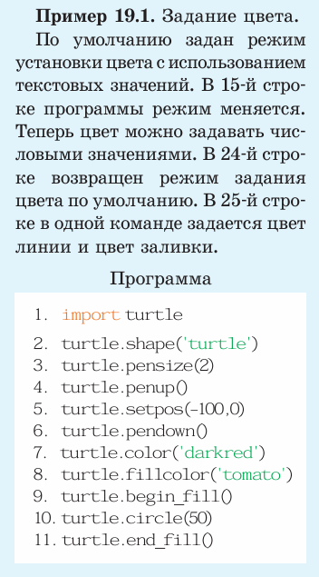
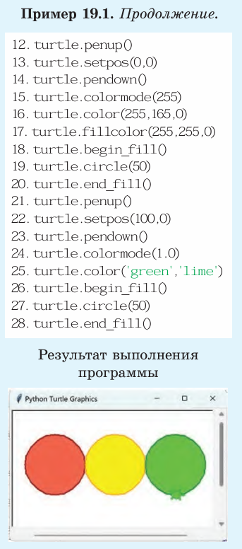
Кроме команд, которые были
рассмотрены в предыдущем параграфе, у исполнителя Черепаха
есть и другие. В таблице приведены возможные команды исполнителя Черепаха.
В таблице перечислены не
все команды исполнителя Черепаха. Еще она может выполнять команды: dot(), stamp(),
speed(), clear() и др. О том,
какие действия выполняют эти
команды, можно узнать в справочной системе
Направление Черепахи в команде setheading(x) задается величиной угла. Некоторые значения параметра x приведены в примере 19.2.
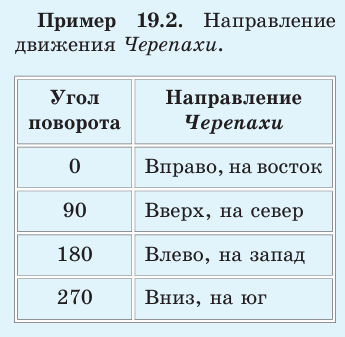
Если текст программы боль
шой, то ее сложно читать, поэтому в программе часто пишут
комментарии — строки текста, которые поясняют написанные команды. Перед текстом комментариев ставится знак # (пример 19.3).
Комментарии можно писать по
русски. Исполнитель пропускает
их при выполнении программы.
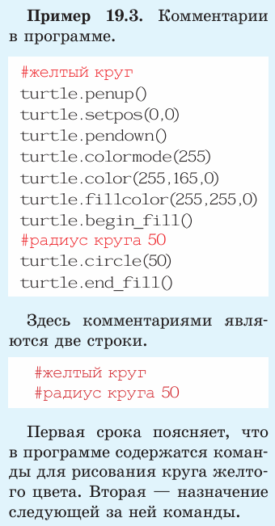
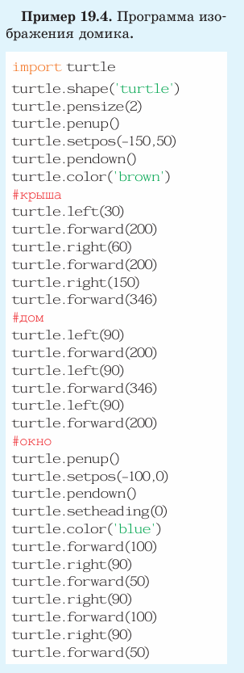
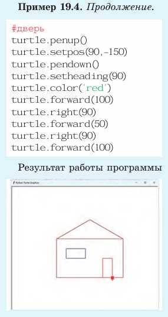
Пример 19.4. Составить алгоритм построения изображения
домика и написать программу
для исполнителя Черепаха.
Выберем следующий алгоритм
построения изображения:
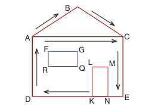
Для подбора размеров и координат желательно сначала нарисовать изображение на листе бумаги в клетку.
Словесное описание алгоритма:
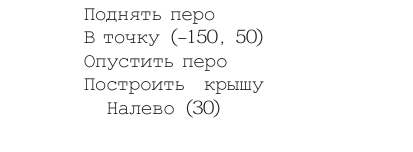
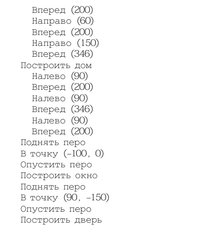
Написанные программы с некоторыми изменениями можно
использовать для решения других задач.
Пример 19.5. Требуется из
менить изображение домика из
примера 19.4.
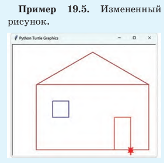
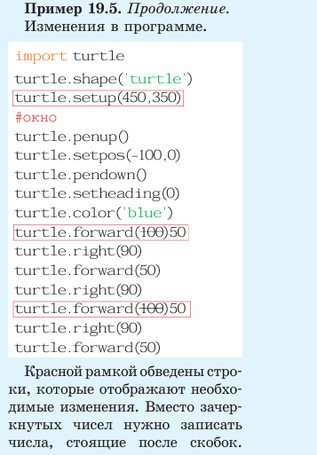
При сравнении нового изображения и изображения из примера 19.4 обнаружим два отличия:
первое — в размерах окна Черепахи, второе — в форме окна
домика. В целом рисунки похожи. Значит, для создания изображения нового домика можно использовать программу из примера 19.4. Внесем изменения
в текст программы в окне редактора среды программирования,
используя правила редактирования текста:
Остальные команды в программе останутся неизменными.
Пример 19.6. Написать про
грамму построения треугольника.
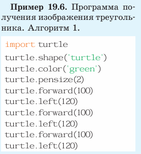
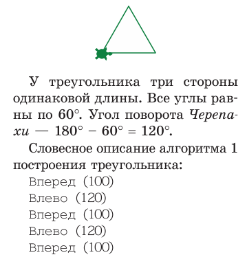
Аналогичный результат можно
получить и с помощью другого
алгоритма (алгоритм 2)
В точку (100, 0)
В точку (50, 75)
В точку (0, 0)
Программа данного алгоритма
приведена в примере 19.7.
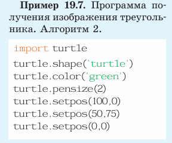
Если сравнить два алгоритма,
то можно сделать следующие выводы:
Пример 19.8. Написать про
грамму построения елки, состо-
ящей из трех одинаковых тре-
угольников. Треугольники стро
им, используя алгоритм 1. Алго-
ритм построения елки может
быть следующим:
Поднять перо
В точку (-50, -85)
Опустить перо
Построить треугольник
Поднять перо
В точку (-50, 0)
Опустить перо
Построить треугольник
Поднять перо
В точку (-50, 85)
Опустить перо
Построить треугольник
Для построения треугольника
в программе нужно три раза ско
пировать фрагмент программы
из примера 19.6.
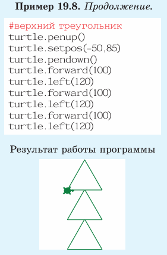
Пример 19.9. Изменить программу из примера 19.6 для получения прямоугольного треугольника с углами 45°, 45°, 90° и длиной катетов 100.
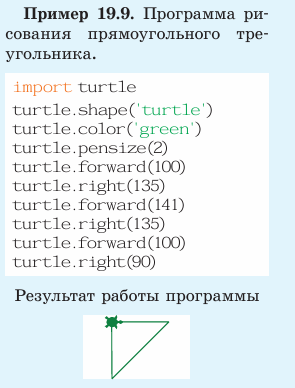
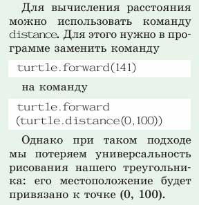
Пример 19.10. Написать программу построения изображения
цифры «3» в почтовом индексе
с помощью исполнителя Черепаха.
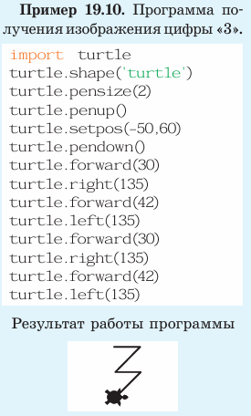
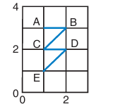
Алгоритм построения изображения:
В точку A(-50, 60)
Опустить перо
Построить цифру, двигаясь по отрезкам AB, BC, CD, DE.
Данное изображение состоит
из двух одинаковых фрагментов,
каждый из которых представляет
собой прямоугольный треугольник без одного прорисованного
катета. Поэтому можно воспользоваться программой из приме- ра 19.9. Длина горизонтальной
линии равна 30, диагональной —
30 × 1,41 ≈ 42.
В некоторых изображениях
часто повторяются одинаковые
фрагменты. Для создания программ построения таких изображений можно скопировать повторяющийся фрагмент программы
и использовать его нужное число
раз так, как это делали в примере 19.8 для построения елки.
Пример 19.11. Написать про
грамму для построения трех
одинаковых цифр «3» красного,
зеленого и синего цвета.
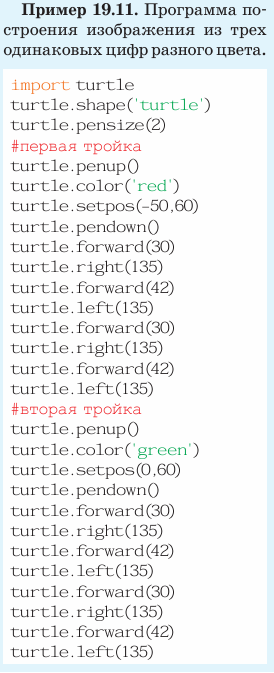
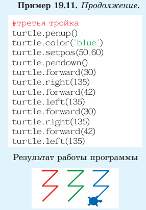
Мы видим, что программу
построения этого изображения
можно составить на основе программы из примера 19.8. Изображение первой цифры начинается от верхней точки слева, ее
координаты (–50, 60). Координаты такой же точки для второй
цифры (0, 60), для третьей —
(50, 60).
Таким образом, для создания
изображения из трех цифр «3»
в тексте программы из примера 19.10 нужно скопировать фрагмент
turtle.penup()
turtle.setpos(-50,60)
turtle.pendown()
turtle.forward(30)
turtle.right(135)
turtle.forward(42)
turtle.left(135)
turtle.forward(30)
turtle.right(135)
turtle.forward(42)
turtle.left(135)
затем следует вставить скопи
рованный фрагмент нужное
число раз. В каждом из вставленных фрагментов изменить
параметры команды turtle.
setpos(-50, 60) — задать координаты начальных то чек. Так
же в каждом фрагменте нужно
дописать команды изменения
цвета.